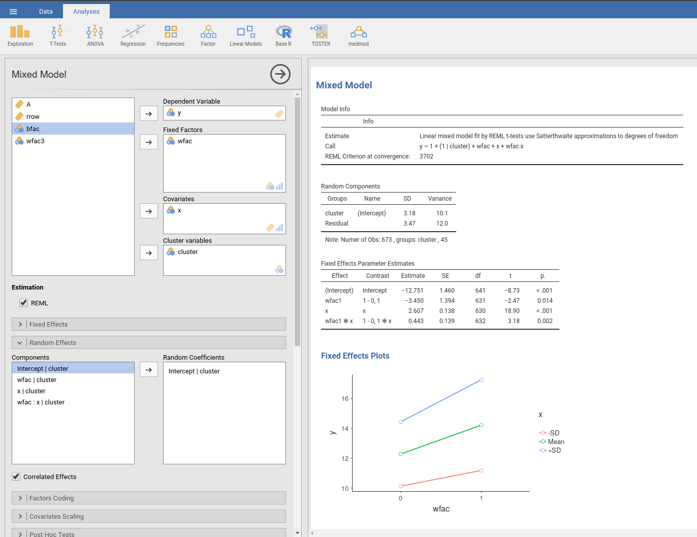
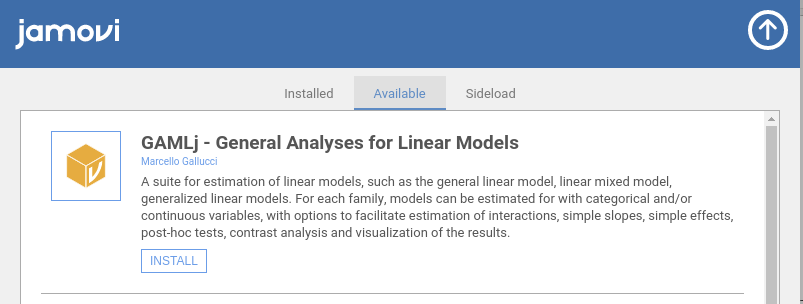

General, Mixed and Generalized Models module for jamovi

GAMLj offers tools to estimate, visualize, and interpret General Linear Models, Mixed Linear Models and Generalized Linear Models with categorial and/or continuous variables, with options to facilitate estimation of interactions, simple slopes, simple effects, post-hoc tests, etc.
Available models are:
Please visit the sub-modules pages for details:
Some worked out examples of the analyses carried out with jamovi GAMLj are posted here (more to come)
If you didn’t already, install jamovi and run it. Select the jamovi modules library and install GAMLj from there

If you are working in linux you can download Jamovi, then download the .jmo from this link gamlj binaries.
You will first need to download Jamovi.
You can clone this repository and compile the module within R with
library(jmvtools)
jmvtools::install()
To install it in R, simple use:
devtools::install_github("gamlj/gamlj")
Please check out the troubleshooting page.
Please check out the Release notes.
Please check the rosetta store for alignment with other software results and possible discrepancies.
Got comments, issues or spotted a bug? Please open an issue on GAMLj at github“ or send me an email